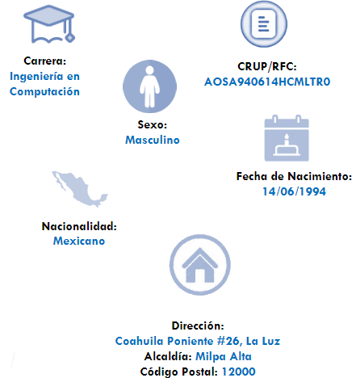

¡Hola! soy Arian Alonso Sotres
Como estudiante en Ing. en computación, mi formación académica, humana y laboral se ha enfocado al desarrollo y la complementación de propuestas útiles en el campo de la productividad, gracias a que he podido participar en actividades que se desarrollan en el ámbito público y político.
Manejo de PC, Windows xp, 7,8,10, Mantenimiento preventivo, y su armado. Software: Photoshop, Proteus, Office 365, Sony Vegas, VHDL, HTML. Redes sociales. Atención a clientes, Ventas, instalación de CCTV, Capturista, Trabajo en equipo y fácil aprendizaje de las actividades.

Ubicacion de Sucursal:
Reparaciones AZ
Propietario: Arian Alonso Sotres